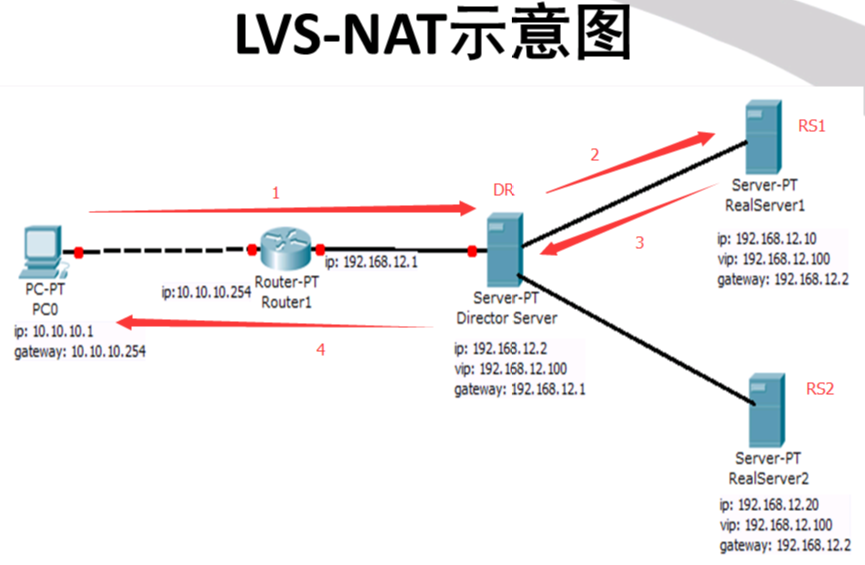

LVS负载均衡模式
LVS-DR模式 （直接路由模式）
LVS-NAT模式 （NAT）
LVS-TUN模式 （隧道模式）
硬件设备
F5，BIG IP
Citrix，Netscaler
A10
软件
四层
LVS
七层
nginx
http，smtp，pop3，imap
haproxy
http，tcp（mysql，smtp）
负载均衡调度算法
静态调度算法
1、轮循调度（Round Robin）（rr）
2、加权轮循（Weight Round Robin）（wrr）
3、目标地址散列（Destination Hashing）（DH）
根据请求的目标IP地址，作为散列键（hash key）从静态分配的散列表找出对应的服务器，若该服务器是可用的且未超载，将请求发送到该服务器，否则返回空。
当一个请求访问时将其丢给一台机器响应，当它下次再来请求时，将他丢给同一台机器进行响应
4、源地址散列（Source Hashing）（SH）
根据请求的源IP地址，作为散列键（hash key）从静态分配的散列键表找出对应的服务器，若该服务器是可用的且未超载，将请求发送到该服务器，否则返回空。
当出口有多个时，根据源IP地址，出去是经过哪个接口，回来还是经过那个接口
动态调度算法
5、最少连接（Least Connections）（LC）
根据活动连接和非活动连接计算开销，计算公式为：活动连接*256+非活动连接，哪个计算结果小，就将请求丢给哪个服务器
6、加权最少连接（Weight Least Connections）（WLC）（最优秀的调度算法，系统默认也是这个）
在集群系统的服务器想能差异较大的情况下，调度器采用“加权最少连接”调度算法优化负载均衡性能，具有较高的服务器将承受较大比例的活动连接负载。调度器可以自动询问真实服务器的负载情况，并动态的调整其权值。
根据计算公式：（活动连接*256+非活动连接）/权重，哪个计算结果小，就将请求丢给哪个服务器
7、最短的期望延迟（Shortest Expected Delay）(SED)
在WLC的基础上做了一下微调，不考虑非活动连接数，只考虑活动连接。
计算公式为：（（活动连接+1）*256）/权重
8、最少队列调度（Never Queue ）（NQ）
无需队列，如果连接数等于0，就直接分配一个连接过去，不需要进行SED运算
9、基于局部性的最少连接（Locality-Based Least Connections）（LBLC）
针对目标地址的负载均衡，目前主要用于cache集群系统。该算法根据请求的目标IP地址找到该目标IP地址最近使用的服务器，若该服务器是可用的且没有超载，将请求发送到该服务器，若服务器不存在，或者该服务器超载且有服务器处于一半的工作负载，则用“最少连接的”原则选出一个可用的服务器，将其发送到该服务器
10、带复制的基于局部性最少连接（Locality-Based Least Connections with Replication）（LBLCR）
这个调度算法也是针对目标IP地址的负载均衡，目前主要用于cache聚群系统。它与LBLC算法打不通之处是它要维护从一个目标IP地址到一组服务器的映射，而LBLC算法维护从一个目标IP地址到一台服务器的映射。该算法根据请求的目标IP地址找出该目标IP地址对应的服务器组，按“最小连接”原则从服务器组中选出一台服务器，若服务器没有超载，将请求发送到该服务区；若服务器超载，则按“最小连接”原则从这个集群中选出一台服务器，将该服务器加入到服务器组中，将请求发送到该服务器。同时当该服务器组有一段时间没有被修改，将最忙的服务器从服务器组中删除，以降低复制程度。
LVS-NAT

LVS-NAT特性
RS必须与DR在同一网络，仅用于与DR服务器通讯
DR接受所有的数据包通讯（包括客户端Direcor、Dirctor和realserver直接的通讯）
RealServer的默认网关必须要指向到Director
Director支持端口映射，可以将客户端的请求映射到RealServer的另一端口
能支持任意操作系统
单一的Director是整个集群的瓶颈
配置LVS-NAT
实验环境，4台虚拟机CentOS7.0，一台DR调度器，两台后端Real Server，一台客户端。
Director调度器：
vip：10.10.10.1（对外的公网ip）
内网ip：192.168.10.1（用于和后端RS通信）
掩码：255.255.255.0
RealServer1：
ip：192.168.10.100
gateway：192.168.10.1（网关一定要指向调度器的内网ip）
掩码：255.255.255.0
RealServer：
ip：192.168.10.200
gateway：192.168.10.1（网关一定要指向调度器的内网ip）
掩码：255.255.255.0
Client：
ip：10.10.10.2
掩码：255.255.255.0
查看网络配置
Director：
TYPE=Ethernet
BOOTPROTO=none
NAME=eno16777736
ONBOOT=yes
IPADDR=192.168.10.1
NETMASK=255.255.255.0
HWADDR=00:0c:29:9a:a1:85
TYPE=Ethernet
BOOTPROTO=none
NAME=eno33554992
ONBOOT=yes
IPADDR=10.10.10.1
NETMASK=255.255.255.0
HWADDR=00:0c:29:9a:a1:8f
RS1：
TYPE=Ethernet
BOOTPROTO=none
NAME=eno16777736
ONBOOT=yes
IPADDR=192.168.10.100
NETMASK=255.255.255.0
GATEWAY=192.168.10.1
HWADDR=00:0c:29:fb:45:31
RS2：
TYPE=Ethernet
BOOTPROTO=none
NAME=eno16777736
ONBOOT=yes
IPADDR=192.168.10.200
NETMASK=255.255.255.0
GATEWAY=192.168.10.1
HWADDR=00:0c:29:35:4b:51
Client：
TYPE=Ethernet
BOOTPROTO=none
NAME=eno16777736
ONBOOT=yes
IPADDR=10.10.10.2
NETMASK=255.255.255.0
HWADDR=00:0c:29:fa:16:ed
配置完网络后，进行lvs的配置，以下配置只在Director上操作。
ipvs已经集成在我们内核里面了，不需要重新编译内核，只需要安装管理套件即可。
如何查看我们内核是否支持ipvs呢，使用以下命令：
$ cat /boot/config-3.10.0-123.el7.x86_64 | grep -i ipvs
# IPVS transport protocol load balancing support
# IPVS scheduler
# IPVS application helper
如果出现以上信息，即表示内核支持ipvs
安装ipvsadm套件：
yum -y install ipvsadm
开启转发功能：
echo 1 > /proc/sys/net/ipv4/ip_forward
然后进行ipvsadm的配置
$ ipvsadm -A -t 10.10.10.1:80 -s wrr
$ ipvsadm -a -t 10.10.10.1:80 -r 192.168.10.100 -m -w 1 （-m使用NAT模式，默认是-g的DR模式）
$ ipvsadm -a -t 10.10.10.1:80 -r 192.168.10.200 -m -w 3
这里我们的调度算法使用加权轮循，ipvsadm的具体参数使用方法用--help自行查看
随后在RS1和RS2上分别安装httpd服务，然后写一个index.html页面，为了区分两台RS的内容，我们RS1上写This is RealServer 1，RS2上我们写This is RealServer 2，随后可以进行测试了，为了排除防火墙的干扰，我们先把防火墙关掉再进行测试。iptables -F
切换到Client进行请求，注意这里我们请求的地址应该是Director上的公网ip地址，不要搞错了
This is RealServer 2
This is RealServer 2
This is RealServer 2
This is RealServer 1
This is RealServer 2
This is RealServer 2
This is RealServer 2
This is RealServer 1
可以看到，我们的请求丢给RS2三次，然后丢给RS1一次，再丢给RS2三次，lvs的调度基本上而没有出现问题。
然后我们使用压力测试工具ab进行大量的请求模拟
ab -c 10 -n 10000 http://10.10.10.1/index.html
完成后切换到Director查看一下连接数，可以看到大致是1:3的比例。
IP Virtual Server version 1.2.1 (size=4096)
Prot LocalAddress:Port Scheduler Flags
-> RemoteAddress:Port Forward Weight ActiveConn InActConn
TCP 10.10.10.1:80 wrr
-> 192.168.10.100:80 Masq 1 0 2501
-> 192.168.10.200:80 Masq 3 0 7503
LVS-DR

LVS-DR特性
RealServer必须与Director在同一网络
RealServer不需要是一个私有ip地址
Director将接收进来的数据包，根据调度算法将数据包转发到后端的RealServer上
RealServer不需要使用Director作为默认网关
能支持更多操作系统
相对于NAT模式来说，能支持更多的RealServer
lvs中内核参数作用
在2.4.26及2.6.4以后的内核中，系统默认支持两个内核参数
arp_announce：对网络接口上本地ip地址发出的ARP回应做出相应级别的限制
0（默认）：在任意网络接口上的任何本地地址
1：尽量避免不在该网络接口子网段的本地地址，当发起ARP请求的源地址是被设置应该经由路由达到此网络接口的时候很有用，此时会检查来访ip是否为所有接口上的子网段内ip之一，如果该来访ip不属于各个网络接口上的子网段内，那么将采用级别2的方式来进行处理。
2：对查询目标使用最适当的本地地址，在此模式下将忽略这个ip数据包的源地址并尝试选择与能与该地址通信的本地地址。首要是选择所有的网络接口的子网中外出访问子网中包含该目标ip地址的本地地址。如果没有合适的地址被发现，将选择当前的发送网络接口或其他的有可能接收到该ARP回应的网络接口来进行发送。
arp_ignore：定义对目标地址为本地ip的ARP询问不同的应答模式
0（默认）：回应任何网络接口上对任何本地ip地址的ARP查询请求
1：只回答目标ip地址是来访网络接口本地地址的ARP查询请求
2：只回答目标ip地址是来访网络接口本地地址的ARP查询请求，且来访ip必须在该网络接口的子网段内
3：不回应该网络界面的ARP请求，而只对设置的唯一和链接地址做出回应addresses are
4-7：保留未使用
8：不回应所有（本地地址）的ARP查询请求
配置
实验环境：
Director：192.168.10.1（eno16777736）
192.168.10.250（eno16777736:1）（vip）
RS1：192.168.10.100（eno16777736）
192.168.10.250（lo:1）（vip）
RS2：192.168.10.200（eno16777736）
192.168.10.250（lo:1）（vip）
Director上配置：
ifconfig eno16777736:1 $vip broadcast $vip netmask 255.255.255.255 up
route add -host $vip dev eno16777736:1
ipvsadm -C
ipvsadm -A -t $vip:80 -s wlc
ipvsadm -a -t $vip:80 -r 192.169.10.100 -g -w 1 （-g使用DR模式，也是默认的模式）
ipvsadm -a -t $vip:80 -r 192.169.10.200 -g -w 2
RS上配置（1和2配置相同）：
echo 1 > /proc/sys/net/ipv4/conf/lo/arp_ignore
echo 1 > /proc/sys/net/ipv4/conf/all/arp_ignore
echo 2 > /proc/sys/net/ipv4/conf/lo/arp_announce
echo 2 > /proc/sys/net/ipv4/conf/all/arp_announce
ifconfig lo:1 $vip broadcast $vip netmask 255.255.255.255 up
route add -host $vip dev lo:1
上面绑定VIP的掩码是”255.255.255.255″，说明广播地址是其本身，那么他就不会将ARP发送到实际的自己该属于的广播域了，这样防止与LVS上VIP冲突，而导致IP冲突。
客户端配置：
将ip设置为192.168.10.*同一网段即可（注意不要冲突）。
测试：
This is RealServer 1
This is RealServer 2
This is RealServer 2
This is RealServer 1
This is RealServer 2
This is RealServer 2
keepalived
安装
yum -y install gcc kernel-devel openssl-devel
下载源码包
解压配置
tar 。。。。
./configure --prefix=/usr/local/ --with-kernel-dir=/usr/src/kernels/2.6.32-642.4.2.el6.x86_64/
- #全局定义部分
- global_defs {
- notification_email{
- 1547840014@qq.com #设置报警邮件地址,可以设置多个,每行一个。需要开启邮件服务功能
- }
- notification_email_from keepalived@localhost #设置邮件的发送地址
- smtp_server 192.168.200.1 #设置smtp server地址
- smtp_connect_timeout 30 #设置连接smtp server的超时时间
- router_id LVS_DEVEL #表示运行keepalived服务器的一个标识,发邮件时显示在邮件主题中的信息
- }
- vrrp_instance VI_1 {
- state MASTER #指定keepalived的角色,MASTER表示此主机是主服务器,#BACKUP表示此主机是备份服务器
- interface eth0 #指定HA检测网络的接口
- virtual_router_id 51 #虚拟路由标识,这个标识是一个数字,同一个vrrp实例使用唯一的标识,即同一个
- vrrp_instance下,MASTER和BACKUP必须是一致的
- priority 100 #定义优先级,数字越大,优先级越高.在一个vrrp_instance下,MASTER的优先级必须大于BACKUP
- advert_int 1 #设定master和backup负载均衡器之间同步检查的时间间隔,单位是秒
- authentication{ #设定验证类型和密码
- auth_type PASS #设置验证类型,主要有HA和PASS两种
- auth_pass 1111 #设置验证密码,在一个vrrp_instance下,MASTER和BACKUP必须使用相同的密码才能正常通信
- }
- virtual_ipaddress{ #设置虚拟IP地址,可以设置多个虚拟IP地址,每行一个
- 192.168.1.20
- }
- }
- #虚拟服务器定义部分
- virtual_server 192.168.1.20 80 { #设置虚拟服务器,需要指定虚拟服务器IP地址和服务端口,IP与端口之间用空格隔开
- delay_loop 6 #设置运行健康检查时间，单位是秒
- lb_algo rr #设置负载均衡调度算法,这里设置为rr,即轮询算法
- lb_kind DR #设置lvs实现负载均衡的机制,有NAT,TUN,DR三个模式可选
- persistence_timeout 50 #回话保持时间,单位是秒。这个对网页很有用,为session共享提供了好的方案
- protocol TCP #指定转发协议类型,有TCP和UDP两种
- real_server 192.168.1.100 80{ #指定真实服务器的ip地址和端口,之间用空格隔开
- weight 3 #权值
- TCP_CHECK{ #realserver的状态检测设置部分,单位是秒
- connect_timeout 3 #表示3秒无响应超时
- nb_get_retry 3 #表示重试次数
- delay_before_retry 3 #表示重试间隔
- }
- }
- real_server 192.168.1.200 80{
- weight 3 #权值
- TCP_CHECK{
- connect_timeout 3
- nb_get_retry 3
- delay_before_retry 3
- }
- }
- }
global_defs {
notification_email {
}
notification_email_from example_from@163.com
smtp_server smtp.163.com
smtp_connect_timeout 30
router_id LVS_DEVEL
}
vrrp_instance VI_1 {
state MASTER
interface eno16777736
virtual_router_id 51
priority 100
advert_int 1
authentication {
auth_type PASS
auth_pass 1111
}
virtual_ipaddress {
192.168.10.250
}
}
virtual_server 192.168.10.250 80 {
delay_loop 6
lb_algo rr
lb_kind DR
persistence_timeout 50
protocol TCP
real_server 192.168.10.100 80 {
weight 1
TCP_CHECK {
connect_timeout 3
nb_get_retry 3
delay_before_retry 3
}
}
real_server 192.168.10.200 80 {
weight 2
TCP_CHECK {
connect_timeout 3
nb_get_retry 3
delay_before_retry 3
}
}
}
IP Virtual Server version 1.2.1 (size=4096)
Prot LocalAddress:Port Scheduler Flags
-> RemoteAddress:Port Forward Weight ActiveConn InActConn
TCP 192.168.10.250:80 rr persistent 50
-> 192.168.10.100:80 Route 1 0 0
-> 192.168.10.200:80 Route 2 0 0
LVS-TUN模型
集群节点可以跨越互联网
RIP必须是公网地址
Director仅处理入站请求，响应报文直接由RS响应
RS网关不能指向Director
只有支持隧道功能的OS才能用于RS
不支持端口映射
LVS持久连接
无论使用什么算法，LVS持久都能实现在一定时间内，将来自同一个客户端请求派发至此前选定的RS
持久连接模板（内存缓冲区）：
每一个客户端，及分配给它的RS的映射关系；
ipvsadm -A ...-p timeout：
timeout：持久连接时长，默认300秒
在基于SSL，需要用到持久连接；